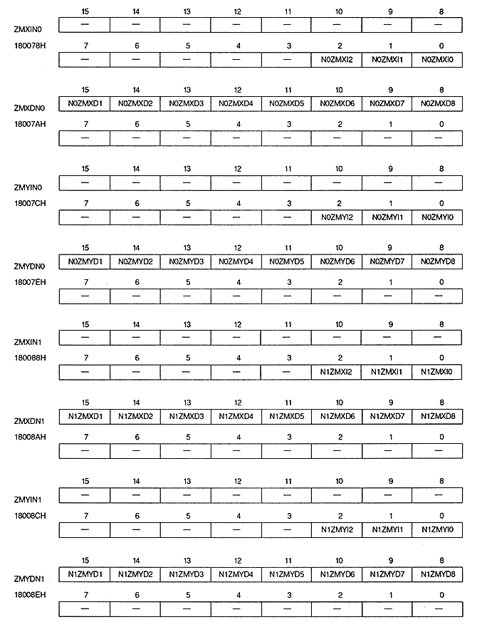

Return to previous page ｜ Return to menu ｜ Go to next page
-
Coordinate increment register
- The coordinate increment register specifies the coordinate increment when performing the coordinate calculation of the scroll screen. This is a write-only 32-bit register at addresses 180078H to 18007EH and 180088H to 18008EH. The value is cleared to 0 after power-on or reset, so be sure to set it.

Return to previous page ｜ Return to menu ｜ Go to next page